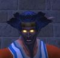

Fumazu
Age : jeune
Sexe : Homme
Race : Elfe
Faction : Alliance
Formation : Chasseur
Description : Un elfe de la nuit à la peau sombre, à la démarche (hors combats) un peu lourde, au style général "campagnard". Il parle un langage un peu rural avec un peu de Darnassien des campagnes dans son Commun et des petits bruits rapellant des sons animaux au milieu. Il ne semble pas très fin au premier abord mais reste souvent pensif de longues heures à propos de tout et de rien. Ne semble pas aimer danser ni faire la fête en général, rougit facilement devant les femmes surtout si elles portent des vètements légers. Mal à l'aise si la situation devient intime ou si on lui parle de choses de "l'amour". Raconte sans difficulté à ses frêres et soeurs qu'il est originaire du village de Brise-Stellaire et que ses parents sont morts. Ne semble pas un fanatique religieux, il reste souvent à l'écart, on le considère comme un peu "sauvage". Il a pour meilleur ami un grand tigre à dents de sabre nommé Sturm, un peu balourd mais solide et courageux quoique parfois un peu imprudent (comme son maitre). Dans la commanderie, semble très proche de Felyndiria. Parle souvent des Taurens pour lesquels il semble avoir une certaine admiration. Semble aimer les déserts et les savanes dont il parle abondamment. Depuis son arrivée, il propose à tout un chacun de l'aide pour tout et n'importe quoi, et a l'air de vouloir se faire des amis même si ses tentatives sont souvent maladroites et parfois mal interprétées. Il semble maitriser de nombreuses armes et se bat indifferement à l'arc, au fusil, à la dague, à l'épée, à la hache ou au baton. Son équipement est en général de bonne qualité mais rarement de grande valeur.
Plus d'infos sur Fumazu >>>Lire le récit de Fumazu >>>